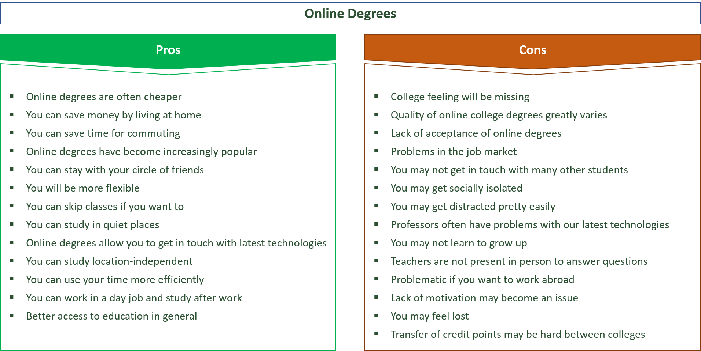

What I found about online classes is that,
we get to be free, we can do anything anytime, we hold our own sched if we'd like to make one aside from synchronous activities. We can also have a week breaks after quarters. We can also go out of town and still be in class as long as you have all the things needed. We can achieve many more things at the comfort at home. We can now actually think about answering/replying back to people and teachers properly and avoid miscommunication. We can also get to sleep on time if the requirements are done. We get to avoid social awkwardness. We get to seek other methods of doing stuff like watching tutorials on how to make a website using html.
Although those were nice, we can't avoid negative stuff occurring like, the multiple factors affecting students and their submissions and attendance. Being hit of the so called tamaritis. Being so tired of oeverything, mentally and physically, getting way too much comfort, getting distracted. Some students failing to apply academic integrity. An unusual study environment and so much more.
Luckliy there is an image in google to probably add or sum up this page which should be seen below, here is the reference https://environmental-conscience.com/studying-online-pros-cons
